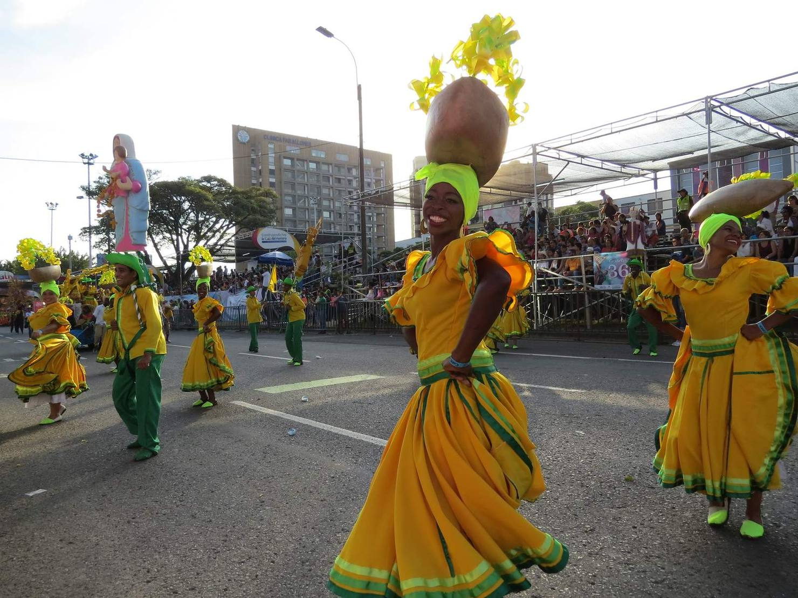

Festivals · Culture
Feria de Cali 2026
- Dates
- –
- Location
- Cali, Colombia
- Format
- In-person
- Category
- Culture
- Industry
- City fair / Salsa / Culture
- Organiser
- Alcaldía de Santiago de Cali
- Official website
- https://calidistritocultural.cali.gov.co/
About
Cali's Secretaría de Turismo projects about 452,700 visitors to the city in December 2026, largely driven by the Feria (a tourism figure, not festival attendance). Colombia dates are local (Colombia time, UTC-5 all year, no daylight saving).
Topics: salsa, Salsódromo, music, dance, parades.
No organiser attendance figure found on the official pages checked (24 Nov 2026). Ranked by an estimated size tier 'very large' (about 100,000-1,000,000 attendees; our judgement from format, venue and scale, not an official number).
Sources
- Official (Alcaldía de Cali, city government) — https://calidistritocultural.cali.gov.co/
- Official — https://www.feriadecali.com.co/
- Official (Cali Secretaría de Turismo portal) — https://www.visitcali.travel/razones-para-estar-en-cali/